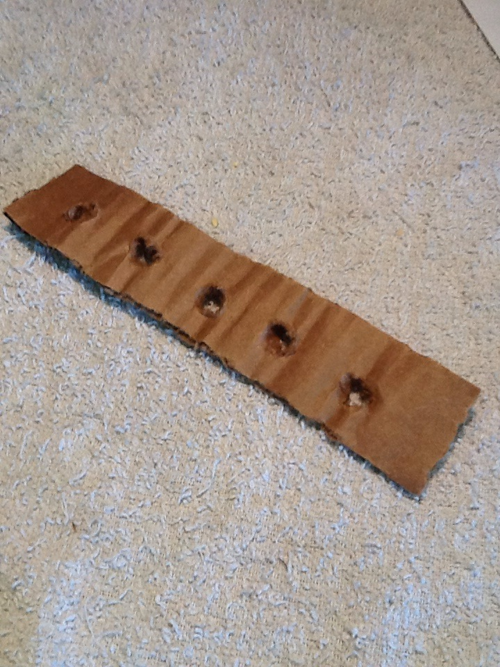
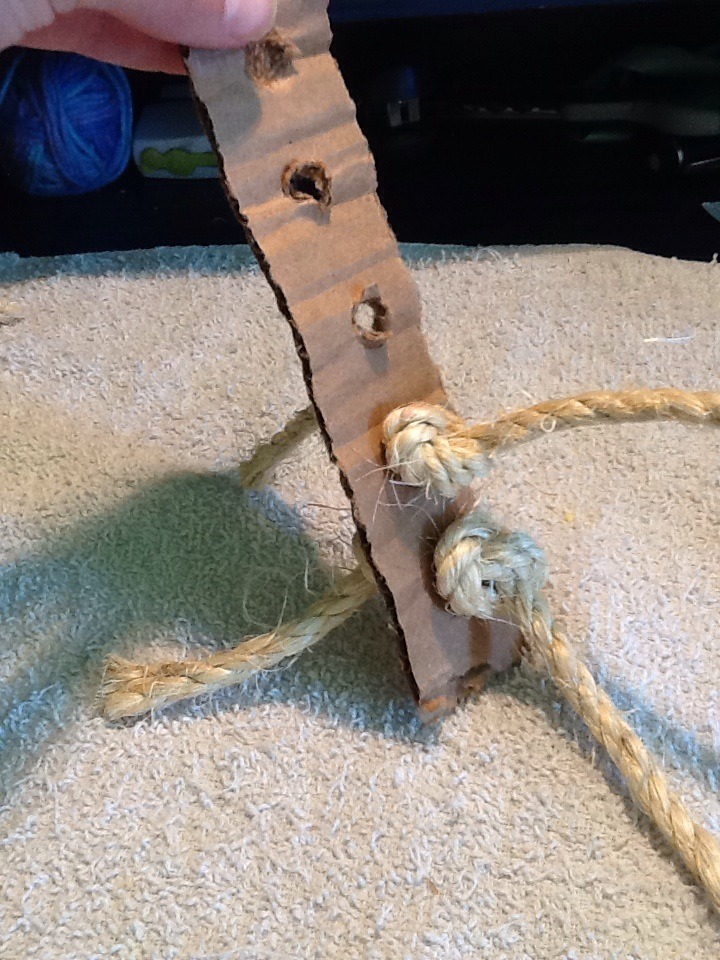
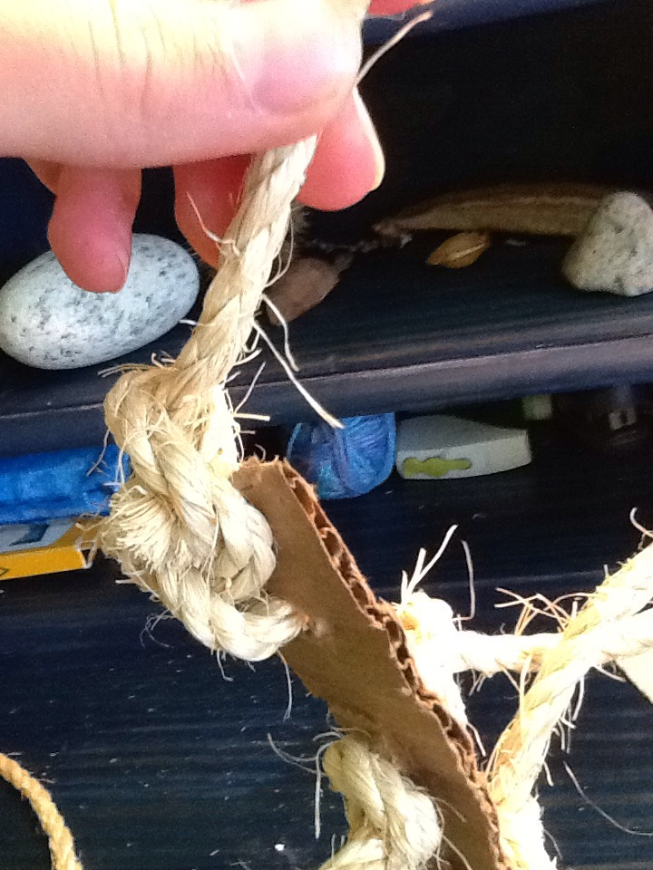

Swingy Thingy
MATERIALS: rope, cardboard, scissors
1.Cut a strip of cardboard about 1" wide by 8" long. You can
change the length depending on the size of your bird. Put
holes down the lenght of the cardboard about every inch.

2. Count the number of holes you put in, and cut that many
pieces of rope about 1 foot long. String them through all
the holes except the hole at the very top. Tie hole on either
side of each holes so the rope can't slip out.

3. Thread the last piece of rope through the top hole and
tie one end of it around the top of the strip of cardboard.
Then tie the other end of the rope to the top of the cage.
